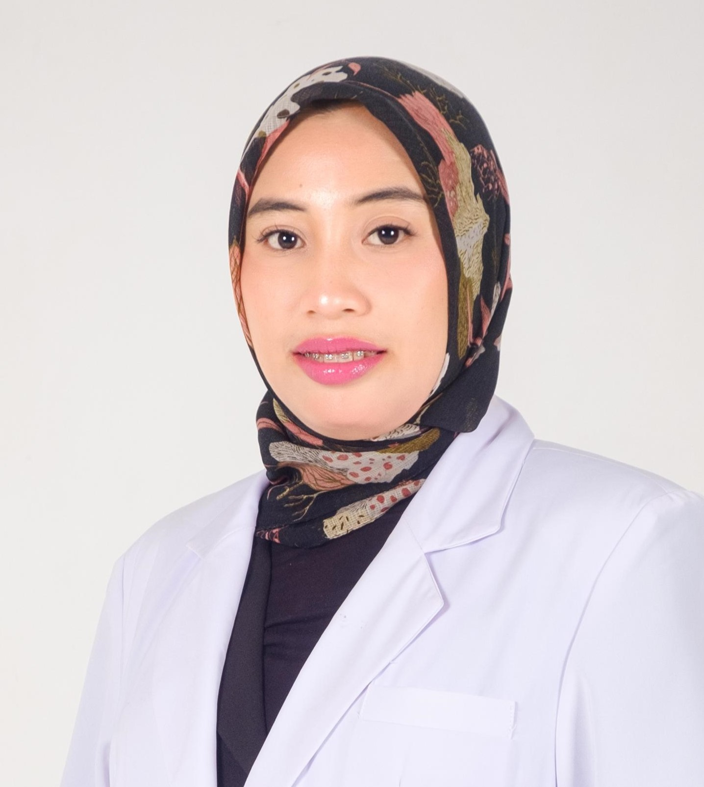

Jadwal Hari Ini
| Foto | Nama Dokter | Spesialis | Hari | Jam Praktik |
|---|---|---|---|---|
| dr. Bramastia Riswandha | Dokter Umum | Senin - Minggu |
Senin - Jumat : 18:00 - 21:00 Sabtu - Minggu : 14:00 - 21:00 |
|
| dr. Granita Amalia Fitrada | Dokter Umum | Senin & Minggu |
Senin : 15:00 - 21:00 Minggu : 14:00 - 21:00 |
|
 |
dr. Novita Kusuma Iswanto | Dokter Umum | Senin - Sabtu |
Senin - Kamis (Pagi) : 08:00 - 15:00 Jumat - Sabtu (Pagi) : 07:30 - 13:00 Selasa - Jumat (Sore) : 16:00 - 21:00 |
| dr. Kurniawan | Dokter Umum | Senin - Minggu |
Minggu (Pagi) : 08:00 - 14:00 Senin - Kamis : 15:00 - 18:00 Jumat : 15:00 - 21:00 |
|
| drg. Rendi Agritama Putra | Dokter Gigi | Senin - Jumat |
Senin - Kamis : 15:30 - 21:30 Jumat : 14:20 |